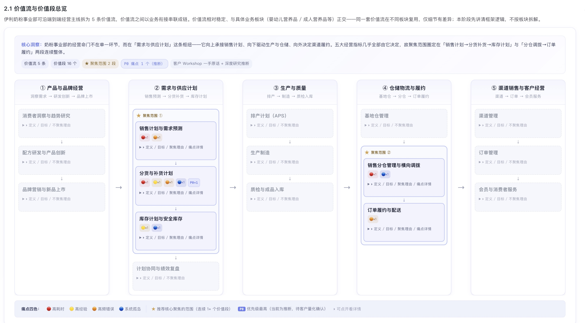
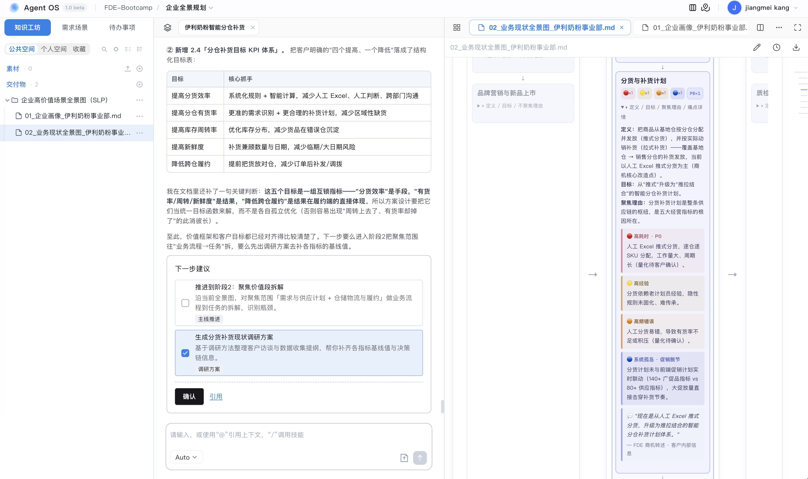
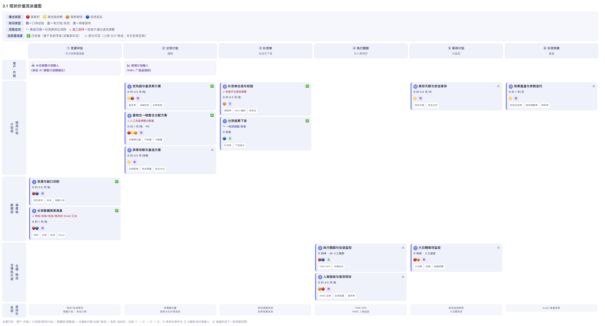
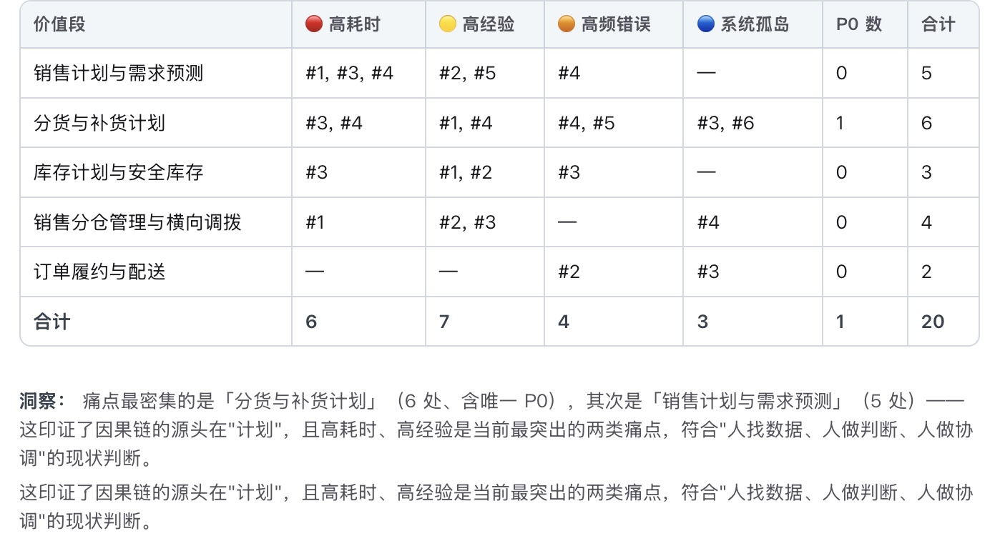
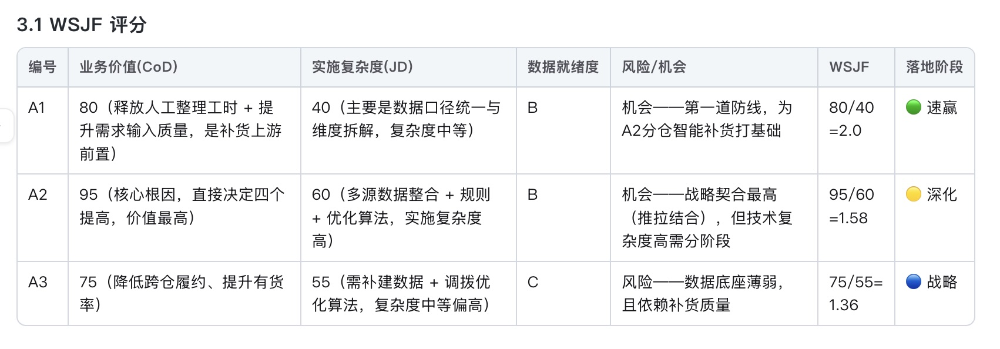

FDE Bootcamp: 理需求模块培训指南 (60分钟)
0. 案例导入
3 分钟以下流程图展示了从 FDE 接到一个商机需求开始，到完成客户研究、场景发现、场景定义的完整流程
1.1 确定公司主体
5 分钟- WHAT：识别客户的母公司、子公司、业务板块及所属行业地位
- WHY：明确需求归属的组织架构，确保调研范围精准，了解企业的核心战略诉求
- 工具：AgentOS 企业全景规划、财报库、LinkedIn、公司官网、搜索引擎
实操指南 (HOW)
在进入客户现场前，FDE 必须通过远程桌研建立对客户的基本认知。首先，利用 AgentOS 的聚合搜索能力，调取客户近三年的年度财报（如 10-K）或官方招股书。重点阅读“Segment Reporting”部分，这能帮你理清客户的钱是从哪个业务板块赚回来的。其次，通过 LinkedIn 企业主页和 Google News 识别其组织规模、全球分布以及最新的重大战略动作（如：是否刚宣布了“AI First”战略）。最后，在 Gartner 或 IDC 等专业知识库中查询该企业在行业象限中的排名，识别其核心竞争对手。这一步的目的是让你在开口说话前，就已经比客户的一般员工更了解其公司的全局位置。
产出
公司主体研究报告（包含股权结构、核心业务占比、年度战略关键词）
产出示例
研究案例客户 伊利集团：识别出其为中国乳业绝对龙头，2025年营收 1,159.31 亿元。奶粉业务是第二大支柱，婴配粉市占率 18.3% 居行业第一。其战略痛点在于“人工 Excel 推式分货”导致的跨仓履约成本高与新鲜度敏感问题，核心数据资产达 1.8 PB
实践提示
重点关注财报中提到的“Risk Factors”。如果提到“人力成本上升”或“交付效率瓶颈”，这就是 AI 介入的绝佳切入点。不要只看官网的 PR 稿，财报里的风险警示往往才是业务负责人的真实痛点。
1.2 初步客户画像
5 分钟- WHAT：识别决策链上的关键角色 (Stakeholders) 及其关注的核心 KPI
- WHY：制定差异化的沟通话术，识别谁是项目的“买单者” (Sponsor) 和“受益者” (User)
- 工具：LinkedIn、AgentOS 访谈聚类、利益相关者矩阵
实操指南 (HOW)
通过 LinkedIn 或企业内网识别决策链上的关键岗位，如 CIO、销售运营总监、提案中心负责人等。利用 AgentOS 整理这些干系人的公开访谈、社交媒体动态或行业演讲，识别其对 AI 技术的态度（是激进派还是稳健派）。构建“利益相关者矩阵”，将干系人按“影响力”和“利益相关度”进行分类。你需要为每个角色准备不同的“诱饵”：对 Sponsor 谈 ROI 和战略转型，对业务负责人谈效率提升和风险规避，对终端用户谈“AI 替你加班”。
产出
关键干系人画像与利益矩阵（识别决策者、支持者、反对者及其核心诉求）
产出示例
伊利集团董事长 (潘刚) 是战略制定者，关注奶粉业务行业第一目标的稳固；财务负责人 (张占强) 关注跨仓调拨的额外物流成本控制；物流计划调度组 深陷于多渠道需求人工汇总与 Excel 推式分货的繁重工作中，其核心诉求是“系统化智能补货建议”
实践提示
要识别出那个“最痛苦的人”，他将成为你在客户内部最坚定的盟友。调研时要特别留意那些“影子决策者”，比如某个资深的流程专家，他的反对意见可能比 CIO 更有杀伤力。
1.3 商业模式与价值流分析
7 分钟企业业务价值流分析方法论
1. WHAT｜什么是价值流分析
定义：围绕特定利益相关者，从业务触发开始，经由多个价值创造阶段，最终形成业务价值结果的端到端路径。
核心概念
| 概念 | 含义 |
|---|---|
| Stakeholder | 为谁创造价值 |
| Trigger | 什么触发价值流 |
| Value Proposition | 最终创造什么价值 |
| Value Stream | 完整的端到端价值创造 |
| Value Stream Stage | 价值创造中的关键阶段 |
| Outcome / Value Item | 阶段性/最终产生的价值结果 |
| Capability | 支撑价值创造的业务能力 |
| Process | 具体执行方式 |
| KPI | 衡量价值创造效果 |
↓
Capability / Process / KPI
示例：需求与供应计划
需求识别 → 需求预测 → 供给配置 → 库存平衡 → 计划确认
最终实现：将市场需求转化为可执行的供需决策，实现需求满足与库存效率的平衡。
2. WHY｜为什么做价值流分析
- 看价值：从部门/流程视角转向端到端价值视角
- 找断点：识别价值创造中的阻塞、浪费和损失
- 建架构：连接战略、价值流、能力、流程和 IT
- 促转型：找到业务优化、数字化和 AI 的价值机会
3. HOW｜如何开展价值流分析
4. 判断标准（六看）
| 判断维度 | 核心问题 |
|---|---|
| 看价值 | 是否明确创造什么业务价值？ |
| 看边界 | Trigger 和 Outcome 是否清晰？ |
| 看端到端 | 是否形成完整价值闭环？ |
| 看 Stage | 是否体现价值递进，而非简单流程步骤？ |
| 看粒度 | 同层级价值流是否保持一致粒度？ |
| 看结果 | 是否能够关联经营结果和 KPI？ |
⚠️ 警惕：把部门、流程、系统或具体操作直接当成 Value Stream
实操指南 (HOW)
使用 AgentOS 提取同行业的通用价值流模板，并根据桌研获得的客户业务板块进行适配。标注出价值流中的“假设痛点”，例如：在 IT 服务业中，商机-合同环节的“提案阶段”通常是耗时最长的。利用“Start with 50%-ready”原则，绘制出一份包含假设瓶颈的流程初稿。这份初稿不需要 100% 正确，它的目的是作为现场调研的“讨论靶子”。标注出每个阶段的关键交付物和平均转化时长，识别出那些高价值、高风险的“黄金环节”。
产出
业务价值流图 (As-is) 与关键交付物清单
产出示例
在 伊利奶粉事业部，通过价值流分析，将其端到端经营拆解为 5 条价值流。发现痛点最密集、牵一发而动全身的杠杆点集中在「需求与供应计划」和「仓储物流与履约」这两段连续的价值流中，这构成了“智能分仓补货体系”的实施落点

实践提示
带一份“可能有错的假设”去现场，比带一张白纸去问客户“你们流程是啥”要高效得多。客户会更愿意纠正你的错误，从而在纠错过程中吐露真实的业务逻辑。
2.1 背景与场景沟通
4 分钟- WHAT：与核心干系人深度面谈，对齐商机需求背后的业务全景与真实痛点
- WHY：确认桌研假设的准确性，识别隐藏的业务约束和干系人的利益关切
- 工具：访谈提纲、价值流初稿 (50%-ready)
实操指南 (HOW)
在进入现场的第一时间，FDE 必须通过与核心干系人（Sponsor 和业务负责人）的深度访谈来对齐目标。首先，展示你在桌研阶段准备的“50%-ready”价值流图，这能迅速将对话从抽象的概念转变为具体的业务探讨。不要直接问“你们想要什么 AI”，而要询问：“在现有的流程中，哪一个环节最让你的团队感到痛苦？”或“如果这个项目失败了，你认为最可能的原因是什么？”利用“黄金圈法则”追问每个需求背后的“Why”，识别出那些为了规避旧系统缺陷而存在的“非正式流程”或离线 Excel 表格。访谈的核心目的是识别出“影子里”的流程和真实的决策链，确保调研方向不会偏离客户的核心 KPI。
产出
调研焦点对齐纪要（包含核心痛点假设确认、现场调研计划）
产出示例
在与 伊利奶粉事业部 的沟通中发现，当前的痛点表面是“跨仓履约成本高”，但深层原因是“需求输入不精细”与“Excel推式分货”。因此整体业务升级目标定为：实现从人工经验驱动向“系统化、规则化、智能化”的推拉结合分仓补货机制重构，实现“四个提高、一个降低”

实践提示
保持“初学者心态”，即使你对该行业很熟悉。关注客户描述中的“矛盾点”——当不同部门对同一个流程的描述不一致时，那里通常就是最大的痛点所在。
2.2 流程建模
6 分钟- WHAT：选定最具代表性的业务线，还原 L2/L3 级细颗粒度的业务流程蓝图
- WHY：建立统一的业务“作战地图”，确保 AI 场景的定义不会脱离实际业务语境
- 工具：SIPOC 模板、影子跟随 (Job Shadowing) 记录表
实操指南 (HOW)
流程建模不是在办公室里凭空想象，而是需要通过“影子跟随 (Job Shadowing)”来实现。FDE 应该坐在提案经理旁边，观察他们从接到标书到输出初稿的全过程，记录下每一次系统切换、每一次鼠标点击以及每一次线下沟通。使用 L2 级流程图记录主干动作，并在关键节点下钻到 L3 级的原子动作。重点标注流程中的“信息断点”：哪里需要人工从 PDF 拷贝到 Word？哪里需要给专家打电话确认参数？利用共创白板工具，邀请跨职能部门的代表共同确认流程的边界。建模的终点是形成一份被所有干系人认可的“现状蓝图 (As-is Blueprint)”，它将作为后续所有痛点分析的基础。
产出
业务流程 L2/L3 蓝图（包含输入输出、处理角色及平均耗时）
产出示例
锁定 伊利奶粉分货补货 业务线。还原出 L3 流程，例如：区域需求采集 -> 销售计划编制 -> 销售计划转分仓维度 -> 分货计划编制 -> 补货订单。识别出“销售计划转分仓维度”及“分货计划编制”环节存在严重的信息断点，完全依赖人工 Excel 扭转

实践提示
不要试图一步到位画出完美的流程图。先画出 80% 的主干，剩下的 20% 异常分支在痛点分析环节自然会暴露出来。关注流程中的“非正式动作”，那往往是 AI 最能提效的地方。
2.3 瓶颈与痛点推导
5 分钟- WHAT：基于流程蓝图，分析高认知负荷、高错误率及长停顿的环节
- WHY：量化业务损失，识别出 AI 最能发挥“雪中送炭”作用的硬骨头场景
- 工具：认知负荷分析模型、痛点热力图
实操指南 (HOW)
应用“认知负荷分析法 (Cognitive Load Analysis)”对流程节点进行扫描。重点寻找那些需要员工记忆复杂规则、查阅海量历史文档或进行高频跨系统比对的环节。计算每个环节的“等待时长”和“返工率”，例如：由于技术方案不匹配导致的法务退回次数。在流程图上标记出“痛点热力图”，并使用结构化的公式来描述痛点：[角色] 在 [具体环节] 遇到 [具体障碍]，导致了 [可量化的业务损失]。这种方式能让客户清晰地看到，如果不引入 AI，他们每年在这些低效环节上损失了多少真金白银。
产出
结构化痛点清单与业务损失评估报告（包含认知负荷热力图）
产出示例
识别出 “基地仓到销售仓分货计划” 是伊利的最大瓶颈（唯一 P0）。当前以“推式分货”为主，物流计划员依赖 Excel 进行逐仓逐 SKU 的手工分配，耗时长且极易出错，无法与前端促销计划联动，直接导致“跨仓履约成本高”

实践提示
痛点描述要符合公式：[角色] 在 [环节] 因为 [原因] 导致了 [具体的业务后果/损失]。痛点必须是“真实的”。如果用户说“我觉得这里慢”，你要追问“上周你在这个环节花了多少时间？”用数据说话，而非感觉。
2.4 识别 AI 机会点
5 分钟- WHAT：将业务痛点映射到 AI 技术能力上，识别潜在的 AI 场景机会
- WHY：明确 AI 在该场景下的角色：是“全自动机器人”还是“专家的智能助手”
- 工具：AI 机会点匹配框架、AgentOS 架构推荐引擎
实操指南 (HOW)
将收集到的痛点放入“AI 机会点匹配框架”中进行过滤。如果痛点属于“海量非结构化信息检索”，则匹配 RAG 技术；如果属于“多步骤逻辑编排与执行”，则匹配 Agent 模式；如果属于“复杂规则合规检查”，则引入本体或知识图谱。在识别机会点时，要明确定义 AI 的介入程度：是辅助生成 (Co-pilot) 还是自主执行 (Autopilot)。不要试图一步到位实现全自动化，先从“专家助手”起步，通过人机协作积累数据。产出一份初步的需求场景清单 (SLP)，包含每个场景的初步价值预估和技术可行性描述。
产出
需求场景清单 (SLP) 初稿（包含场景定义、AI 角色及技术匹配）
产出示例
在伊利案例中，识别出核心 AI 机会点：分仓智能补货优化。AI 角色定位为“物流计划员的智能调度助手”，基于大模型提取多渠道历史销量趋势及促销活动标签，预测各分仓的短中长期需求，系统自动生成补调货建议，辅助人工确认
实践提示
不要为了用 AI 而用 AI。如果一个痛点通过修改 Excel 公式或优化行政流程就能解决，那就不要动用大模型。AI 应该用在那些传统手段无法解决的“模糊决策”环节。先理顺逻辑，再叠加 AI。
2.5 优先级评估
5 分钟- WHAT：从业务价值和实现难度两个维度对场景进行打分筛选，锁定首个 MVP
- WHY：确保有限的研发资源投入在“高 ROI”且“能落地”的场景上
- 工具：价值-可行性四象限、数据准备度评估表
实操指南 (HOW)
组织核心干系人进行“优先级工作坊”。使用“价值-可行性”四象限图，从业务价值（如对签单率的影响、Sponsor 关注度）和技术可行性（如数据质量、技术成熟度、合规风险）两个维度对所有机会点进行盲打分。特别关注“数据准备度 (Data Readiness)”：是否有足够的历史语料？数据是否敏感不可触碰？最终选出 1-2 个处于“Quick Win”象限（高价值、中高可行性）的场景作为首批启动项目。输出最终的 SLP (Scoping & Labeling Plan)，并由客户决策层签字确认，这标志着场景发现阶段的正式结束。
产出
高优场景清单与 MVP 建议报告（包含四象限评估结果）
产出示例
采用 WSJF 模型评估，伊利 “分仓智能补货” 场景因其能够直接降低跨仓履约成本、提高新鲜度且具备良好的数据基础（1.8 PB 数据池联通率达 85%），其延期成本极高，被评为 P0 级优先实施场景

实践提示
警惕那些“政治正确”但“数据真空”的场景。如果客户非常想要一个场景，但无法提供任何训练或参考数据，该场景的优先级应该被果断降低。数据准备度是评估可行性的第一标准。
3.1 需求目标与 KPI
4 分钟- WHAT：将场景成效与客户的战略 KPI 进行强绑定，定义清晰的成功指标
- WHY：让 AI 的价值从“玄学”变成“数学”，为项目立项和 ROI 测算提供决策依据
- 工具：OSM 模型、业务基准 (Baseline) 数据表
实操指南 (HOW)
应用“OSM 模型 (Objective-Strategy-Measurement)”将高优先级的场景目标转化为可衡量的指标。首先，访谈财务或销售运营部门，获取当前流程的基准数据 (Baseline)，例如：目前制作一份提案的平均人力成本、平均周期以及历史丢标率。其次，与业务负责人共创 AI 介入后的“改进目标值”，确保这些目标是具有挑战性但可实现的。定义“北极星指标”，例如“端到端交付周期缩短 %”，并将其拆解为 AI 的具体表现指标（如检索准确率、初稿采纳率）。最后，将这些指标填入“成效指标 KPI 表格”，并获得业务 Sponsor 的签字认可，确保 AI 项目的成功与业务部门的利益保持一致。
产出
成效指标 KPI 定义表（包含北极星指标与二级拆解指标）
产出示例
伊利智能分仓补货项目 目标设定：将当前“人工推式分货”升级为“系统辅助的智能推拉结合补货”。核心 KPI 包含：跨仓履约率下降，分仓有货率与新鲜度提升，以及大幅缩减物流计划员人工制表与核算分货方案的时间

实践提示
KPI 必须是客户现有系统能统计出来的。如果你定义了一个系统无法监控的指标，那么在项目结束时，你将无法证明 AI 到底带来了多少价值。确保指标的可追溯性。
3.2 业务动作识别
6 分钟- WHAT：拆解 AI 介入后，人与 AI 交互的具体业务动作序列
- WHY：识别数据输入的来源、AI 处理的逻辑断点以及人工复核的心理阈值
- 工具：原子动作分解模板、人机协作边界图
实操指南 (HOW)
绘制 To-be 流程的“原子动作序列”。你需要详细描述用户与 AI 的每一次交互动作：用户上传什么？AI 提取什么？AI 在哪里停下来等待人工确认？人工又基于什么标准进行修改？通过这种“显微镜级”的拆解，识别出每个动作所需的上下文数据 (Context)，例如：在 AI 匹配历史条款时，是否需要同时参考最新的法律合规库？标注出“人机协作”的权力边界，明确哪些动作是 AI 建议，哪些动作是必须由人执行的终审决策。这种动作级的拆解将直接指导后续的 Prompt 工程 and Agent 编排逻辑，防止在开发阶段出现交互逻辑的真空。
产出
To-be 业务动作序列图（标注人机协作断点与上下文需求）
产出示例
在 伊利分仓智能补货 环节，识别出原子动作：系统每日自动拉取各仓日均销量及促销计划，计算库存天数及安全水位；AI 自动输出《分仓补货建议单》；物流计划员复核（修改或驳回）后一键下发至执行系统
实践提示
要特别关注“AI 搞不定怎么办”的 Fallback 逻辑。如果 AI 检索不到匹配的条款，它是应该随便编一个，还是诚实地告诉用户“未找到，请手动编写”？这直接决定了用户对系统的信任度。
3.3 数据知识探查
7 分钟- WHAT：识别支撑 AI 场景所需的原始数据源、知识文档及数据质量评估
- WHY：数据是 AI 的燃料，提前探查数据分布和质量，决定了 RAG 检索的准确率和 Agent 的执行边界
- 工具：数据资产清单模板、AgentOS 样本初筛工具
实操指南 (HOW)
FDE 必须化身为“数据侦探”。首先，梳理出支撑业务动作所需的“知识地图”，识别这些数据分布在哪些孤岛中（如：SharePoint 上的 PDF、Salesforce 里的记录、Wiki 上的文本）。其次，进行“样本初筛 (Data Sampling)”：抽取 10-20 份历史 SOW，使用 AgentOS 进行自动化清洗和结构化评估，检查知识的“噪声比”和“逻辑一致性”。最后，探查数据权限与合规边界，确认 FDE 和未来的 AI Agent 是否拥有合法且通畅的访问路径。如果发现原始数据质量极差（如：充斥着大量过时的方案），必须在场景定义阶段就提出“知识治理”建议，防止“垃圾进，垃圾出”的风险。
产出
数据质量与权限探查报告（包含知识分布地图与样本质量评估）
产出示例
在 Ascentium 案例 中，发现关键的“技术能力描述”散落在 5 个事业部的 SharePoint 站点，且包含 Word 和 PPT 格式。经过探查，确定了需要 3 个月的历史数据清洗期，以确保 AI 不会引用 5 年前的过时技术
在 伊利案例 中，探查了底层数据支撑：包含订单中台的多渠道订单数据、WMS 系统的分仓库存数据、促销系统的 140+ 广促品指标，以及商品效期批次数据。确认了数据连通率 85%，基本满足智能补货模型所需的特征要求
实践提示
不要相信客户说的“我们数据很干净”。一定要亲自打开几份文档看一看。RAG 系统的上限不在模型，而在你喂给它的知识质量。宁可数据量少，也要保证每一条知识都是准确且时效性强的。
3.4 场景画布与指标
5 分钟- WHAT：使用结构化模板 (AI Opportunity Canvas) 定义场景全貌，并确定 MoS 指标
- WHY：产出场景需求规格说明书 (SRP)，作为后续 AI 研发和 Prompt 工程的唯一输入标准
- 工具：AI Opportunity Canvas、MoS 指标体系
实操指南 (HOW)
使用“AI 机会画布”将前期的所有碎片化信息进行聚合。画布包含五个核心要素：输入数据（用户提供什么）、模型任务（AI 做什么，如摘要、匹配、生成）、输出格式（结构化 JSON 还是 Word 段落）、用户交互（界面在哪里）以及业务价值（对 KPI 的贡献）。在此基础上，定义场景的“成功度指标 (Measure of Success, MoS)”。MoS 必须比 KPI 更具技术导向，例如：AI 检索的准确率 (Top-K Recall)、生成内容的采纳率 (Acceptance Rate) 以及幻觉率的容忍度。将 MoS 与活动 1 中的 KPI 进行强映射，形成一份完备的 SRP (Scenario Requirements Plan)，它是后续交付团队的“作战手册”。
产出
场景需求规格说明书 (SRP)（包含机会画布与 MoS 定义）
产出示例
定义 Ascentium 场景的 MoS 为：1. AI 生成初稿的“可用率” > 80%；2. 用户对 AI 建议的点击率 > 90%。这份画布成为了后续 Prompt 调试和 RAG 优化的核心基准
完成 《伊利分仓智能补货-场景定义画布》，详细定义了 Trigger（每日定时计算/安全库存告警）、User（物流计划员）、Business Value（履约成本降低）以及 MoS（模型预测补货量与最终实际发货量的偏离度 < 10%）。SRP 正式确认并交接给技术团队
实践提示
MoS 指标要尽量客观。与其问用户“你觉得 AI 写得好吗”，不如统计“用户在 AI 生成的内容上修改了多少个字符”。用客观的行为指标来衡量 AI 的表现。
3.5 旅程设计与原型
6 分钟- WHAT：绘制未来数字化的用户旅程，并制作高保真概念原型 (Prototype)
- WHY：实现“可视即价值”，锁定客户的交付预期，提前在低成本阶段识别交互风险
- 工具：Figma、低代码原型工具、As-is/To-be 对比图
实操指南 (HOW)
在交付 SRP 前，必须完成“可视即价值”的最后闭环。首先，绘制“To-be 用户旅程图”，直观展示 AI 介入后，哪些繁琐的步骤被消减了，哪些高认知负荷的决策被简化了。其次，使用 Figma 或简单的 HTML 低代码工具制作“高保真概念原型”。这个原型不需要接入真实模型，但必须能模拟出真实的交互感：AI 按钮在哪里？AI 建议如何弹出？修改后的内容如何回填？组织客户进行“原型走查会”，让业务人员亲手点一点。这种直观的展示能迅速暴露潜在的交互盲区，并极大增强客户对项目的信心。一个能动的 Demo 比 100 页的 PPT 更有说服力。
产出
高保真概念原型 Demo 与 To-be 用户旅程图
产出示例
展示 “智能提案侧边栏” 原型：当提案经理在 Word 中输入“客户需求”时，右侧 AI 自动弹出“建议引用的历史 SOW 片段”及“合规风险警示”。客户看到原型的瞬间就决定了立项
为伊利设计了 To-be 旅程并制作 智能分仓补货前端概念原型：包含「九点异常总览与缺口识别」、「分货方案推理与人工确认」、「事件驱动临时补调」等 4 个关键 Moments，直观展现了物流计划员与 AI 大模型的交互过程
实践提示
在定义阶段投入 2 天做原型，能减少后期 20 天的无效沟通。不要追求原型的功能完备性，要追求“价值感的传达”。让客户在没写一行代码前就看到 AI 带来的未来。
4. 总结与实操
5 分钟1. 全流程回顾
- 理需求三部曲：懂业务 (客户研究) -> 找痛点 (场景发现) -> 定方案 (场景定义)
- 核心价值：通过“理需求”将模糊的客户诉求转化为结构化的 AI 场景规划 (SRP)，为后续交付打好地基
2. AgentOS 实操演示 (关键环节展示)
- 桌研提效演示 (Desk Research)
- 演示如何使用 AgentOS 聚合搜索 Ascentium 及伊利奶粉所在的行业报告，并在 30 秒内提取出核心价值流模型
- 展示如何通过 AgentOS 对 20 份历史访谈录音或业务痛点记录进行语义聚类，自动生成包含“痛点频率”的热力图（如伊利的“跨仓履约”痛点）
- 共创产出演示 (Co-creation)
- 演示如何使用 AgentOS 辅助生成初版“场景画布”：输入痛点清单，AI 自动推荐 RAG + Agent 或大模型智能补货调度的架构组合
- 展示基于 Ascentium 与伊利业务逻辑自动推演出的 MoS 指标建议（包含数据获取方式说明）
3. 核心精神总结
- 以业务价值为导向：所有的 AI 场景必须最终关联到客户的战略 KPI
- Start with 50%-ready：善用 AgentOS 提效，永远带着“假设”去共创
- 可视 = 价值：用原型 and Demo 锁定客户预期，减少交付偏差
开放问答 (Q&A)
欢迎就“理需求”阶段的任何方法论或工具使用问题进行讨论